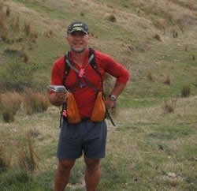
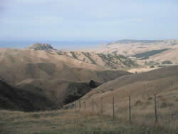
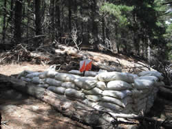
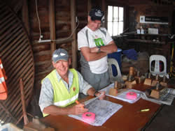
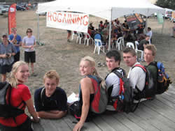

Organiser's Reflections
Mondo Kopu
Crafty Pete Squires approached me after the 2010 Heights of Winter meal/prize giving asking if I would be interested in hosting the 2011 NZ Champs. He must have sensed that I was on a bit of a high after my successful outing that day with my 12Hr 'novice' mixed team and made his move at the right time.
I readily agreed of course not fully appreciating at that stage the scale and enormity of the job ahead of me. Having planned several 6 and 3Hr rogaines I was reasonably confident that I could plan and organise a 24Hr one.

I also acknowledged that the usual NZRA rogaine team were extremely busy with organising the World Rogaine Champs and it would have been a huge task for them to organise the NZ Champs too.Over the years I had identified a few areas that I thought would have potential for a 24Hr rogaine so once I got back home I pulled out the topo maps for a quick reccy of these areas. In the end what influenced me to the most to choose the area where the 2011 was hosted was the fact that all the properties have previously hosted rogaines therefore the landowners were familiar with it, the time of year was ideal for them, proximity to Blenheim for accommodation and logistics plus being close from home to easily access parts of the course thus minimising driving time and ensuring a reasonable balance of family time too. My sons are a bit young at this stage to join me on long excursions although they did accompany me on the quad bike on easier and safer terrain.
I pulled out copies of the old rogaine maps and assessed the controls that were used and marked some on to the master planning map that I thought would be suitable. As part of my training for the World Rogaine Champs I walked over the entire course (day and night) checking potential controls sites, routes in and out, tracks, vegetation etc.
The initial area scoped was a further 5kms south and 2kms east of the final map and after I had completed a full reccy I decided to reduce the area to what was finalised. Even then I had considered reducing the areas and number of controls further by removing the cluster of controls 79-30-58, 45-53-36-26, 34-13-43, 11-71-28-40, 24-32-29-20, 79-30-58 and 37-77-47-68-98. After consulting with the course vetters I opted to retain these as they offered options for collection, were potential 'teasers', created strategic decision making and it was feasible that a top team on fire could collect them all. As it transpired all but 8 of these controls were not visited.
Once I was happy with the distribution of control sites, the range and variety (easy, subtle, attack points/strong features nearby etc) of navigational challenge and control descriptions I then allocated the points. While some people may think that this is straight forward I spent considerable time with this as certain values should influence strategic decisions,

collection of controls (what not and what to collect), direction of travel, teaser/red herring controls, high point focus (i.e. 90 pointer harder to get, higher climb v 60 + 40 that are closer in, easier to get etc but worth 10 points more) and a few for the freakishly fast and fit.The course vetters then cast their eyes over the map and control descriptions with a few suggested changes. Controls were then vetted when once completed a few more changes were made. Control descriptions was an item that we spent some time discussing. I wanted to offer a variety of control descriptions to provide map reading/interpretation challenges, offer reward to the good navigators yet at the same time allow novices a mix of easy and not so easy. The control description can influence peoples interpretation of the map. Sometimes I feel that they are far too easy i.e. "The saddle" when it is glaringly obvious thus people then just start looking for the control rather than the feature whereas "A large rock, S side" (which so happens to be in the saddle) forces people to look at the map to see where the circle is, more specifically the centre of the circle and nearby to help pin point where the rock will be. This also assists people with reading the map (contours etc) as to how to get to the control.
Some examples - 63 was originally "A large rock, S side 70metres SE of the saddle/track junction" which were all clearly within the circle. It was felt that the competitors hand was being held; 61 - (an easy and obvious one) was "The spur" which was clearly visible within the circle; 77 and 37 - were both described as having "A rocky outcrop" with no mention of "The spur". It was obvious that the centre of the circle was on the spur and that all one had to do was walk along (up or down) the spur and one would come upon the control, bearing in mind the location of the circle to surrounding features.

62 (which caused some discussion post event) - "A man made object (Bunker)", again no mention of "The Spur" (subtle) which upon close inspection was in the centre of the circle; 96 - "A pond" could have been "A pond in the watercourse junction". Anyway - that's how it was and hopefully for most part it worked - go and look at your maps again.Note: did people measure the distance of the control circle? 300m diameter therefore 150m to the centre of the circle. An extremely useful piece of information and navigational aid, especially if one is casting about or getting close to a control and pace counting from the edge of the circle to the centre.
I'm sure that by now people will have reviewed their maps and courses and will identify controls that were best left. The two controls I felt were quite critical to drawing the eyes to 89-79 and 102-68. The 79 was of high enough value to tempt teams to collect. 68 due to its placement and proximity to 102 drew the eye to it. Both worked and teams visited them, some with successful outcomes and not. In my opinion alternative routes were better, 89-99 and 102-78. The cluster of controls 56-37-77-47-68-98 was one that I was interested to see would entice people and one team did (excl 33). Others did 68-98. This cluster was worth 340 points and while there was some back tracking on the gravel road it was only approx 2.0kms. It offered time to give the brain and feet/body an easier time and allow opportunity to assess/review what I anticipated would be the night time route.
The next major job was putting out the controls (flags, pink tape, Navlight and the plastic tubes to protect them). Whilst it involved many hours (70) I enjoyed walking, running and riding out on the course and did this all on my own as there is a limited number of people that I trust to put the controls out.

These people were either competing or were the course-vetters. Other people were unavailable.While this was all going on the 'other' aspects of the event needed to be organised and finalised - entries, event centre, catering, shelter, parking, camping, toilets etc. Fortunately I had a willing and very able team of people to help pull this all together. It was a great experience to have us all socialising and working together.
Entries leading up to the event were typically slow of rogainers and at one point consideration was given to postponing the event. We decided to stick with the date and a last minute flurry of entries helped to bump the numbers up. I was surprised that there weren't more 15 in 24 entrants and people from the top of the south adventure racing/multisport community. The days leading up to the event were a hive of activity and it was a relief when the day arrived and to briefly catch up with fellow rogainers. Casting my eye over proposed routes and offering some advice to 15 in 24 competitors was worthwhile. Once briefing was over and people headed off I was able to relax a bit. I managed to look at several flight plans which provided interesting assessment.
Rest of the day was spent organising the night set up and ensuring everyone was briefed on what to do. Several teams came back in to the hash house and I was relieved to hear that there were no major injuries, incidents or issues with controls. I did have one team phone me up saying that they couldn't find a control. I quickly worked out that they were not where they thought they were. Some of the teams that came in were not so confident in their night navigation and opted to get some sleep and head back out at first light. I was able to go to bed at 11:00pm. I was awoken with a text message early in the morning from a team needing to be evacuated from the course but when I got to the woolshed to

see the night shift crew the matter had already been taken care of.Once teams started arriving back and everyone accounted for I was able to relax a lot. Having competed in several 24Hr events I anticipated people would be weary, have sore feet/legs, complain about hills (I reckon a lot of teams did a lot of unnecessary descending and ascending), control placement wasn't right (all GPS folks +/- 4.0m) etc etc.
Further relief once meal and prize-giving concluded and folks started heading off. Our team made short work of taking everything down and tidying up. My family and I headed home where I treated myself to a couple of beers with our evening meal.
Controls are still being collected up with everything due to be off the course by weekend of 2/3 April. Our company starts grape harvest off our own blocks that same weekend with a 70 - 120 tonne harvest. Eve of the Harvest? Sure is.......
Cheers - Mondo
Some final comments:
In spite of the longs hours and focus involved and required for a 24Hr event it was a fantastic experience. It is a good way to improve ones own rogaining too. There is some relief that it may be awhile before I plan another 24Hr but when the time comes I know that I will enjoy it and having a team of great supporters that have been through one event makes a huge difference for the future. As a regular competitor I also felt privileged to host the rogaine as so often it is easier to be a competitor.
Landowners - all landowners were incredibly helpful and accommodating. I received offers to use farm vehicles to get around the course, shared cups of tea and home baking, they were in awe of seeing teams out and about, head torches were spotted from lounges (and main highway too), no issues with litter, gates or stock. I'm going to help one farmer with some mustering - area of CPs 64-53-45-97-87-52-96-57-62-36 - walking along the fence line.
A helicopter sprayed weeds on Sunday 20th at Beneagle. Pilot commented that he saw the flag at CP 103.
Sponsors - Lowlands Wines were extremely generous donating 3x cases of their award winning wine. These were used as spot prizes and gifts to the landowners. CPR coffee supplied awesome coffee to the event and the caterers for Sunday's meal. The organising team were kept well fuelled throughout the event. Cheers to other sponsors for their products and/or services. Highly recommend Fells merino beanies - perfect for the Heights of Winter.
Catering - The Fairhall Home and School League for handling all of this. Plenty of food, great variety too.
Note: In hindsight it would have been a good idea to have a remote hash house at the Beneagle woolshed. I think that this would have been possible with the food that was available and would have only required one person to be sited there. Noted for future events.
Entries - Janette Holdaway deserves special praise and mention for the work that she did. She was the first person that came to mind and who that I had absolute confidence in ensuring that this would be done efficiently and meticulously.
Website - Bill Kennedy for his work in setting this up, providing updates, results and post event matters.
Course-vetters - Susan King and Barry Hope. Again competent people to entrust with this task and to whom I valued overall comments on various aspects of the course.
NZRA - various people, Pete Squires, Bill Kennedy, Grant Hunter, Jac Woudberg, de Lacey's, Dave Laurie.
Mapping - Draughting Plus (Russell and Tania Silcock).
Marlborough Rogainers - registration, site set up/take down, marshalling, dealing with competitors, night shift, getting controls in. Awesome team effort, a great experience and I will be able to delegate this all to you next time.
Competitors - to you all, thanks for your entry, returning to the finish safely and in spite of your weariness I was stoked to see you smiling. I am in awe of everyone who entered which is a big step on its own and committing to competing. Being out on the course was a new experience for many of you and I sincerely hope that I see you at future events. Seasoned competitors know what its all about and always good to see you at these events. Overall Top 10-20 results was pleasing to see lots of Vet teams. Take note other teams of these results and download their routes and splits.
Very encouraging to see the good number of secondary school entrants. Future potential looks very promising.